DVMRP
Thuật toán ngây thơ: Flooding (Naive Algorithm: Flooding)
Hãy nhớ lại mục tiêu của multicast routing (định tuyến multicast): Chúng ta có một gói tin mà đích đến là một nhóm, và các router cần phối hợp để chuyển tiếp gói tin này tới tất cả các thành viên của nhóm.
Cách triển khai ngây thơ nhất là flooding (phát tràn). Khi một router nhận được gói tin, nó đơn giản chuyển tiếp gói tin đó ra tất cả các cổng (trừ cổng nhận vào).
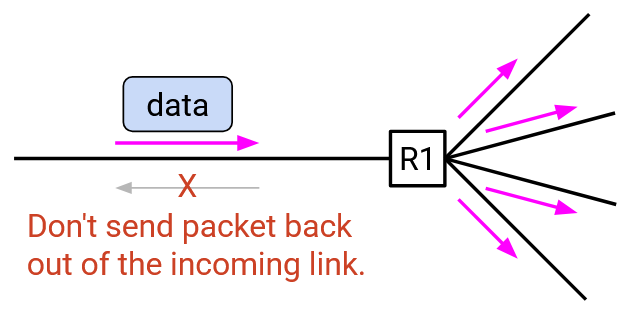Tại sao flooding hoạt động? Nó đảm bảo mọi host trên mạng đều nhận được gói tin, bao gồm tất cả các thành viên của nhóm đích.
Điểm tốt của flooding: Khái niệm đơn giản, không cần chạy bất kỳ giao thức định tuyến nào.
Vấn đề của flooding: Có hai vấn đề chính, chúng ta sẽ giải quyết từng vấn đề một:
- Flooding lãng phí băng thông khi gửi cùng một dữ liệu qua nhiều đường, trong khi dữ liệu đó chỉ cần được gửi qua một đường duy nhất.
- Flooding lãng phí băng thông khi gửi gói tin tới các nút không phải thành viên.
Ngoài ra, các vòng lặp có thể gây ra broadcast storm (bão quảng bá) khi cùng một gói tin được chuyển tiếp vô hạn trong vòng lặp, mặc dù điều này có thể được giải quyết bằng cách để router loại bỏ gói tin nếu đã thấy trước đó.
Reverse Path Broadcasting (RPB)
Bây giờ, hãy tập trung vào vấn đề đầu tiên. (Lưu ý: Điều này có nghĩa là hiện tại chúng ta vẫn sẽ gửi gói multicast tới tất cả mọi người, bao gồm cả các nút không phải thành viên. Chúng ta sẽ giải quyết vấn đề này sau.)
Flooding gửi gói tin tới tất cả mọi người, nhưng lãng phí băng thông khi gửi dữ liệu qua các liên kết dư thừa. Ví dụ: nếu có nhiều đường giữa R1 và R4, flooding sẽ khiến các bản sao gói tin đi qua mọi đường từ R1 tới R4. Sau đó, R4 sẽ loại bỏ tất cả các bản sao trùng lặp.
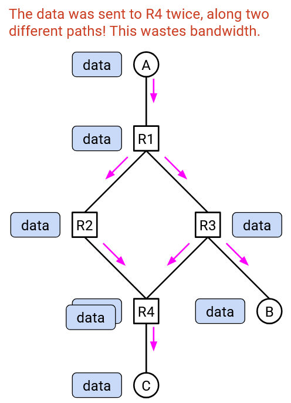Lý tưởng nhất, chúng ta muốn gói tin chỉ đi qua một đường duy nhất từ R1 tới R4, và tương tự giữa mọi cặp router khác.
Điều này gợi nhớ đến cấu trúc dữ liệu nào? Tree (cây) chỉ có một đường duy nhất giữa mọi cặp nút!
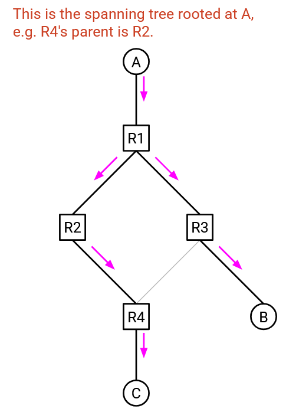Cụ thể, chúng ta muốn xây dựng một spanning tree (cây bao trùm), để mọi người chỉ nhận gói tin qua một đường duy nhất.
Chúng ta có thể xây dựng spanning tree từ đầu, nhưng có thể tận dụng công việc đã làm trước đó. Chúng ta đã thấy spanning tree ở đâu?
Khi chạy distance-vector routing cho gói unicast, chúng ta đã xây dựng một spanning tree hướng về đích. Điều này cho phép tất cả gói tin chảy “lên” trong đồ thị mạng, hướng tới một đích duy nhất (gốc của cây).
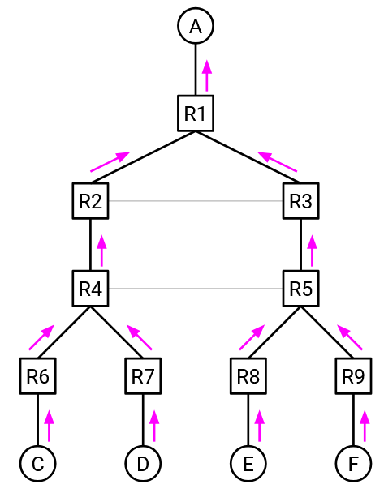Nếu đảo ngược tất cả các mũi tên trong đồ thị này, chúng ta sẽ có một spanning tree phù hợp cho gói multicast. Gốc của cây bây giờ là sender (nguồn gửi), và các bản sao gói tin chảy “xuống” trong đồ thị mạng, rời khỏi nguồn và đi qua mạng để đến mọi đích.
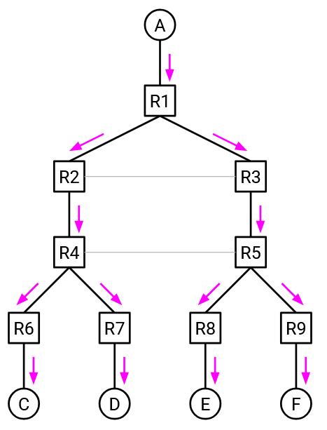Để tránh nhầm lẫn khi nghĩ về mũi tên đảo ngược, chúng ta sẽ dùng thuật ngữ quen thuộc hơn: Trong cây router, mỗi router có đúng một parent (nút cha) và 0 hoặc nhiều child (nút con). Router ở “đỉnh” cây là root (gốc), và các router ở “đáy” cây không có con được gọi là leaf (lá).
- Trong unicast routing, root là destination (đích). Mọi nút nhận gói tin từ con của mình và chuyển tiếp “lên” cho cha, hướng về đích.
- Trong multicast routing, root là source (nguồn). Mọi nút nhận gói tin từ cha và chuyển tiếp “xuống” cho các con, hướng tới tất cả các đích.
Quy tắc chuyển tiếp multicast: Nếu nhận gói tin từ cha, gửi nó tới tất cả các con. Nếu nhận gói tin từ ai khác (không phải cha), loại bỏ gói tin.
Quy tắc này giúp tránh việc gói tin đi qua nhiều đường. Dù có nhiều đường tới bạn, bạn chỉ nhận gói tin từ cha một lần và chuyển tiếp cho các con. Nếu nhận bản sao từ nút khác (không phải cha), bạn sẽ loại bỏ nó.
RPM: Xác định cha và con (RPM: Learning Your Parent and Children)
Làm thế nào để triển khai quy tắc này? Mỗi router cần biết cha của mình và tất cả các con.
Xác định cha: Dễ dàng. Cây này giống hệt cây từ distance-vector cho unicast. Trong unicast forwarding table (bảng chuyển tiếp unicast), next-hop tới root chính là cha của bạn. Bạn có thể tái sử dụng thông tin này.
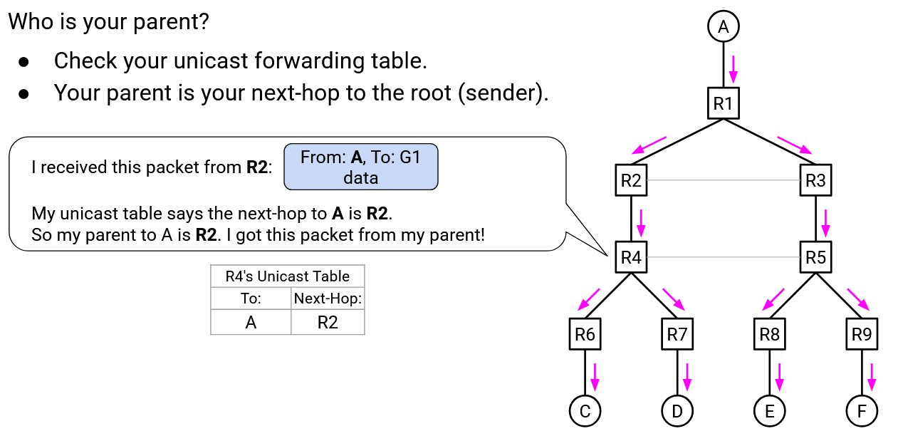Xác định con: Khó hơn một chút. Bảng chuyển tiếp chỉ cho biết cha (next-hop về phía root), nhưng không cho biết con (previous-hop, rời khỏi root).
Vì bạn không biết con của mình, nên các con phải tự thông báo cho bạn. Cụ thể, mọi nút gửi multicast routing advertisement (thông báo định tuyến multicast) tới cha của mình: “Tôi là con của bạn (trong cây gốc A).” (Mọi nút biết cha của mình từ bảng chuyển tiếp unicast.)
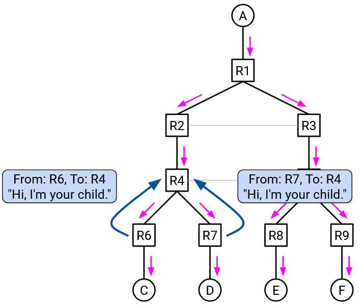Sau đó, mỗi router nhận các thông báo này và lưu thông tin về các con của mình. Đây là thông tin mới, được thêm riêng cho multicast routing. Multicast forwarding table (bảng chuyển tiếp multicast) này tách biệt với bảng chuyển tiếp unicast.
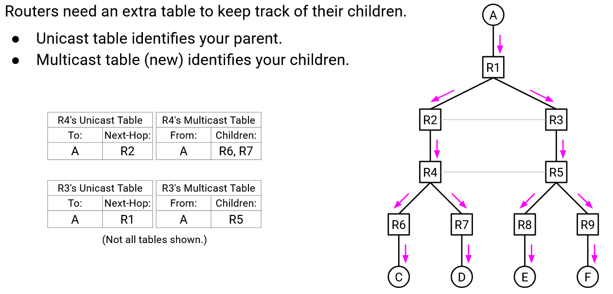Tóm tắt: Khi nhận gói tin, dùng bảng chuyển tiếp unicast (liệt kê cha) để kiểm tra xem gói tin có đến từ cha không. Nếu có, dùng bảng chuyển tiếp multicast (chứa danh sách con) để gửi cho các con.

Vai trò của từng bảng:
- Unicast forwarding table: Liệt kê cha, dùng để unicast gói tin, kiểm tra gói multicast có từ cha không, và gửi multicast routing advertisement cho cha.
- Multicast forwarding table: Liệt kê con, được xây dựng từ các advertisement nhận từ con, dùng để gửi gói multicast cho tất cả các con.
Lưu ý quan trọng: Trong distance-vector unicast routing, chúng ta xây dựng một spanning tree cho mỗi đích, nên bảng chuyển tiếp unicast có một next-hop cho mỗi đích (một cha cho mỗi cây). Khi đảo mũi tên, chúng ta có một spanning tree cho mỗi nguồn. Bảng chuyển tiếp multicast có danh sách con cho mỗi nguồn. Ví dụ: “Nếu nhận gói tin từ nguồn A, gửi cho các con R6, R7.”
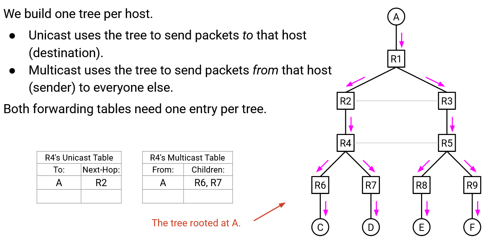 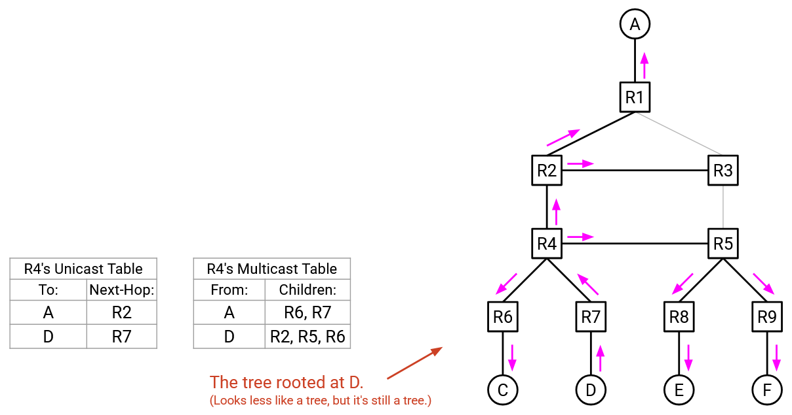Reverse Path Multicasting (RPM): Pruning (Cắt tỉa trong định tuyến multicast theo đường ngược)
Quy tắc Reverse Path Broadcasting (RPB) của chúng ta đảm bảo rằng các gói tin di chuyển dọc theo một spanning tree (cây bao trùm), bắt đầu từ source (nguồn – gốc cây) và đi “xuống” qua mạng tới tất cả các đích. Việc sử dụng cây đã giải quyết vấn đề đầu tiên (gói tin đi theo nhiều đường và lãng phí băng thông).
Tuy nhiên, chúng ta vẫn còn vấn đề thứ hai cần giải quyết. Cho đến nay, các gói tin của chúng ta vẫn đang được broadcast (phát quảng bá) tới tất cả mọi người, bao gồm cả các host không thuộc nhóm. Điều này gây lãng phí băng thông.
Để giải quyết, chúng ta sẽ prune (cắt tỉa) cây bằng cách loại bỏ các nhánh không có thành viên nhóm.
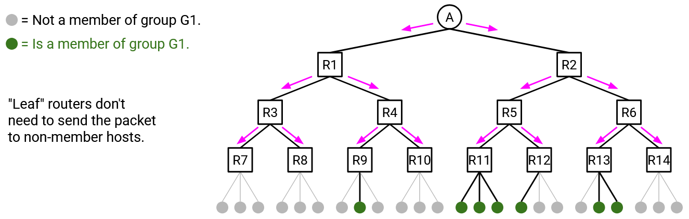 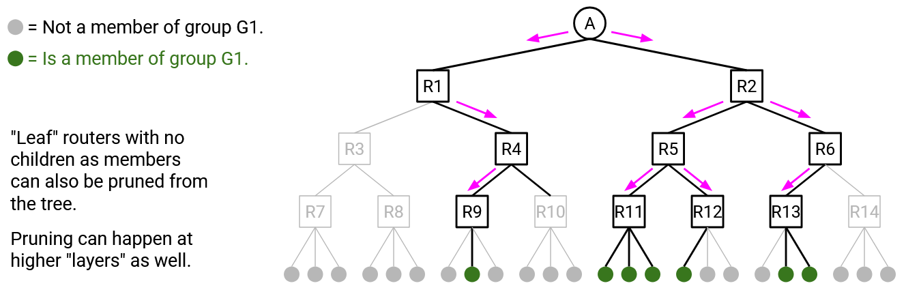Quá trình cắt tỉa được lan truyền từ các child (nút con) lên parent (nút cha). Giả sử bạn là R5, và được kết nối trực tiếp với 3 host. Sử dụng IGMP (trao đổi thông tin với các host này), bạn biết rằng không host nào thuộc nhóm. Điều này có nghĩa là không có lý do gì để bạn tiếp tục là một phần của cây này.
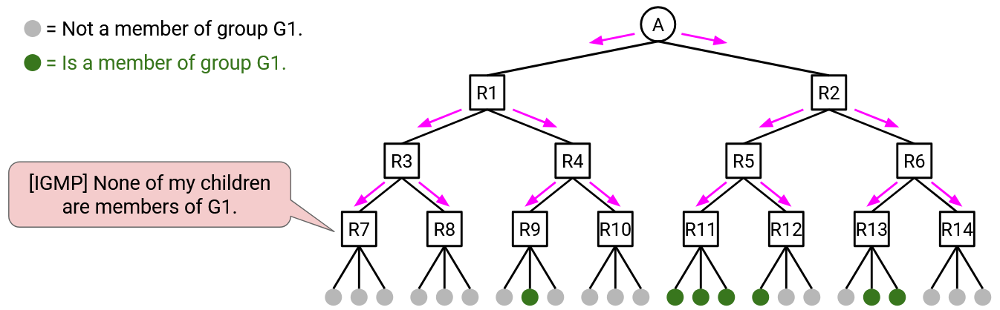Bạn có thể gửi một advertisement (thông báo) tới cha của mình: “Tôi là con của bạn, nhưng không có hậu duệ nào của tôi tham gia nhóm này, vì vậy đừng gửi gói dữ liệu cho tôi.” Cha của bạn sau đó có thể cập nhật multicast forwarding table (bảng chuyển tiếp multicast) để loại bạn khỏi danh sách con. Lưu ý rằng thông điệp pruning chỉ được gửi tới cha trực tiếp của bạn (không được chuyển tiếp xa hơn).
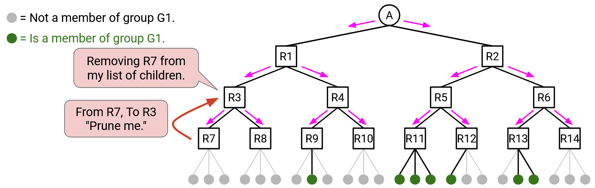 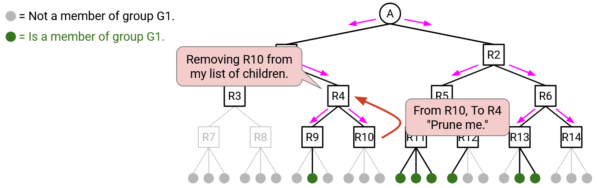Việc cắt tỉa cũng có thể xảy ra ở các mức cao hơn của cây. Xét R3, một router có 2 con. Giả sử cả hai con đều gửi thông báo pruning, nói rằng chúng không tham gia nhóm này. Nếu không con nào của bạn tham gia nhóm, thì bạn cũng không cần tham gia. Do đó, bạn có thể loại mình khỏi cây bằng cách gửi thông báo pruning tới cha, để cha ngừng gửi dữ liệu cho bạn.
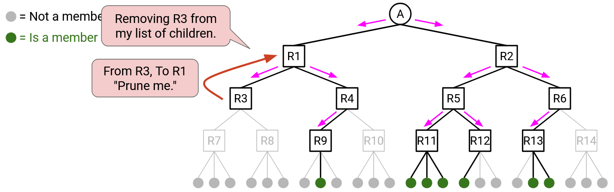Lưu ý: Các router ở mức cao hơn có thể vừa có con là router, vừa có host kết nối trực tiếp. Trong trường hợp này, router chỉ có thể loại mình khỏi cây nếu tất cả các con gửi thông báo pruning và tất cả các host kết nối trực tiếp không thuộc nhóm.

Việc cắt tỉa làm cho bảng chuyển tiếp multicast phức tạp hơn một chút. Trước đây, mỗi mục ánh xạ một nguồn tới danh sách các con: “Nếu nhận gói tin từ nguồn A, chuyển tiếp tới các con R11, R12.” Tuy nhiên, danh sách con giờ đây còn phụ thuộc vào destination group (nhóm đích). Ví dụ: có thể R11 và R2 đều có hậu duệ thuộc nhóm G1, nhưng chỉ R11 có hậu duệ thuộc nhóm G2 (tức là R12 đã gửi thông báo prune cho bạn).
Để xử lý, bảng chuyển tiếp multicast phải có một mục cho mỗi (source, group). Ví dụ: “Nếu nhận gói tin từ nguồn A tới nhóm G1, chuyển tiếp tới các con R11, R12.”
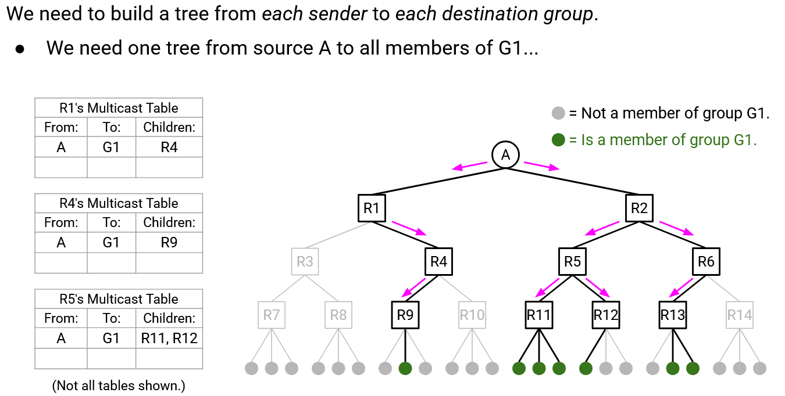Một mục khác: “Nếu nhận gói tin từ nguồn A tới nhóm G2, chuyển tiếp tới con R11.”
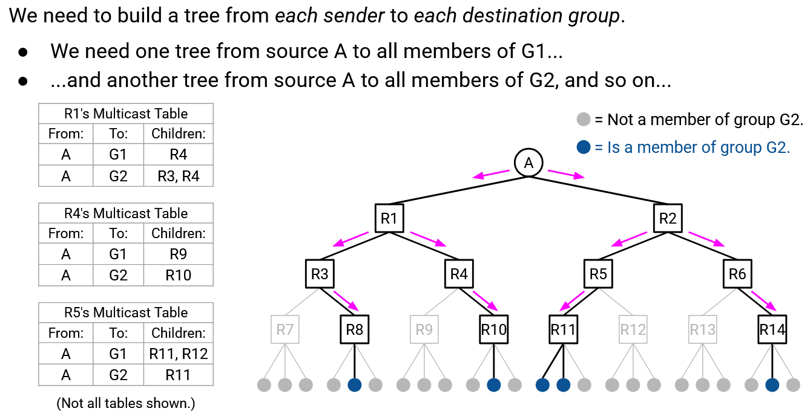Một cách khác để hình dung: Trước đây, chúng ta có một cây cho mỗi nguồn, cho thấy nguồn đó gửi gói multicast tới tất cả mọi người. Giờ đây, chúng ta cắt bỏ các nhánh tùy theo nhóm đích. Do đó, chúng ta cần một cây cho mỗi (source, destination group).
Lưu ý cuối: Có thể hiện tại không con nào của bạn thuộc nhóm, nhưng sau đó một hậu duệ của bạn tham gia nhóm. Để xử lý, mỗi router sẽ định kỳ xóa toàn bộ thông tin pruning, để không ai bị cắt tỉa nữa. Điều này khiến mọi thứ quay lại hành vi RPB ban đầu, nơi bạn luôn chuyển tiếp cho tất cả các con.
Bằng cách này, nếu một hậu duệ của bạn tham gia nhóm, thì sau khi bộ đếm thời gian hết hạn, bạn sẽ không còn bị cắt tỉa và sẽ tham gia lại cây. Ngược lại, nếu vẫn không có hậu duệ nào thuộc nhóm, bạn chỉ cần gửi lại thông báo pruning cho cha để được loại khỏi cây.
Tóm tắt các quy tắc DVMRP (Summary of DVMRP Rules)
Quy tắc định tuyến (Routing Rules):
Với mỗi spanning tree của một nguồn, bạn cần biết cha và các con của mình.
- Xác định cha: Không cần hành động gì. Bảng chuyển tiếp unicast của bạn đã xác định cha.
- Xác định con: Mọi nút gửi advertisement tới cha. Khi nhận được advertisement, bạn biết ai là con của mình.
Quy tắc chuyển tiếp (Forwarding Rules):
- Khi nhận gói tin, dùng bảng chuyển tiếp unicast cho nguồn đó để kiểm tra xem gói tin có đến từ cha không.
- Nếu gói tin đến từ cha, dùng bảng chuyển tiếp multicast để gửi cho các con. Chỉ gửi cho các con không bị cắt tỉa đối với nhóm đích.
- Nếu gói tin không đến từ cha, loại bỏ gói tin.
Quy tắc cắt tỉa (Pruning Rules):
Với mỗi cặp (destination group, source):
- Nếu nhận thông báo pruning từ một con, loại con đó khỏi mục bảng chuyển tiếp multicast cho nhóm đích này.
- Nếu không hậu duệ nào (host kết nối trực tiếp hoặc con) thuộc nhóm, gửi thông báo pruning cho cha.
- Định kỳ xóa toàn bộ thông tin pruning (quay lại chuyển tiếp cho tất cả các con).
Ưu và nhược điểm của DVMRP (DVMRP Pros and Cons)
Nhược điểm:
- Thông tin pruning được xóa định kỳ. Khi điều này xảy ra, gói tin lại được broadcast tới tất cả mọi người cho đến khi quá trình pruning hội tụ lại (nhớ rằng không có pruning thì gói tin được gửi tới tất cả).
- Bảng chuyển tiếp mở rộng kém: cần một mục cho mỗi (source, destination group).
Ưu điểm:
- DVMRP là một phần mở rộng đơn giản, tinh gọn của giao thức định tuyến hiện có (distance-vector). Chúng ta có thể tái sử dụng bảng chuyển tiếp unicast để triển khai DVMRP. Ví dụ: không cần suy nghĩ nhiều về cách xác định cha vì đã có sẵn.
- Vì tái sử dụng cây phân phối từ giao thức distance-vector, các cây này cũng là least-cost tree (cây chi phí thấp nhất). Nói cách khác, chúng cung cấp đường tốt nhất từ nguồn tới tất cả thành viên nhóm. Đây là lý do tại sao ta nói IP multicast là tối ưu: DVMRP đạt hiệu năng tốt nhất xét theo chi phí trong topology mạng.
Hạn chế: Việc gắn kết multicast và unicast routing khiến việc chuyển đổi giao thức khó hơn. Ví dụ: nếu chuyển giao thức unicast từ distance-vector sang link-state, chúng ta cũng phải thiết kế lại giao thức multicast.